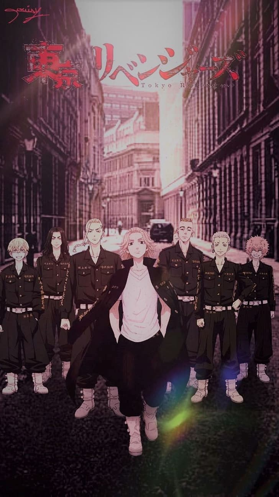
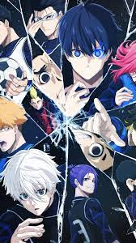

READ MANGA

TOKYO REVENGERS
東京卍リベンジャーズ
Type
: Manga
Status
: Finished
Authors
: Wakui,Ken
Published
: Mar 1 2017 to ?
Takemichi Hanagaki's life is at an all-time low. Just when he thought it couldn't get worse, he finds out that Hinata Tachibana, his ex-girlfriend, was murdered by the Tokyo Manji Gang: a group of vicious criminals that has been disturbing society's peace for quite some time. Wondering where it all went
...
wrong, Takemichi suddenly finds himself travelling through time, ending up 12 years in the past—when he was still in a relationship with Hinata. Realizing he has a chance to save her, Takemichi resolves to infiltrate the Tokyo Manji Gang and climb the ranks in order to rewrite the future and save Hinata from her tragic fate.
Read more
DEMON SLAYER
鬼滅の刃
Type
: Manga
Status
: Finished
Authors
:Gotouge,Koyaharu
Published
: Feb 15 2016 to May 18 2020
Tanjirou Kamado lives with his impoverished family on a remote mountain. As the oldest sibling, he took upon the responsibility of ensuring his family's livelihood after the death of his father. On a cold winter day, he goes down to the local village in order to sell some charcoal. As dusk falls, he is forced
...
to spend the night in the house of a curious man who cautions him of strange creatures that roam the night: malevolent demons who crave human flesh. When he finally makes his way home, Tanjirou's worst nightmare comes true. His entire family has been brutally slaughtered with the sole exception of his sister Nezuko, who has turned into a flesh-eating demon. Engulfed in hatred and despair, Tanjirou desperately tries to stop Nezuko from attacking other people, setting out on a journey to avenge his family and find a way to turn his beloved sister back into a human. | Chapter 001-009: Final Selection Arc | Chapter 010-013: First Mission Arc | Chapter 014-019: Asakusa Arc | Chapter 020-027: Tsuzumi Mansion Arc | Chapter 028-044: Natagumo Mountain Arc | Chapter 045-053: Rehabilitation Training Arc | Chapter 054-069: Mugen Train Arc | Chapter 070-099: Entertainment District Arc | Chapter 100-127: Swordsmith Village Arc | Chapter 128-136: Hashira Training Arc | Chapter 137-183: Final Battle Arc | Chapter 184-205: Sunrise Countdown Arc.
Read more
ONE PUNCH MAN
ワンパンマン
Type
: Manga
Status
: Publishing
Authors
:Muraka,Yasuke
Published
: Jun 14 2012 to ?
After rigorously training for three years, the ordinary Saitama has gained immense strength which allows him to take out anyone and anything with just one punch. He decides to put his new skill to good use by becoming a hero. However, he quickly becomes bored with easily defeating monsters
...
, and wants someone to give him a challenge to bring back the spark of being a hero. Upon bearing witness to Saitama's amazing power, Genos, a cyborg, is determined to become Saitama's apprentice. During this time, Saitama realizes he is neither getting the recognition that he deserves nor known by the people due to him not being a part of the Hero Association. Wanting to boost his reputation, Saitama decides to have Genos register with him, in exchange for taking him in as a pupil. Together, the two begin working their way up toward becoming true heroes, hoping to find strong enemies and earn respect in the process.
Read more

BLUE LOCK
ブルーロック
Type
: Manga
Status
: Publishing
Authors
:Kaneshiro,Muneyuki
Published
: Aug 1 2018 to ?
After reflecting on the current state of Japanese soccer, the Japanese Football Association decides to hire the enigmatic and eccentric coach Jinpachi Ego to achieve their dream of winning the World Cup. Believing that Japan has lacked an egoistic striker hungry for goals, Jinpachi initiates the Blue
...
Lock—a prison-like facility where three hundred talented strikers from high schools all over Japan are isolated and pitted against each other. The sole survivor of Blue Lock will earn the right to become the national team's striker, and those who are defeated shall be banned from joining the team forever. Selected to join this risky project is Yoichi Isagi, a striker who failed to bring his high school soccer team to the national tournament. After choosing to pass to a teammate who missed instead of scoring on his own, he could not help but wonder if the results would have been different had he been more selfish. Using this golden opportunity given by the Blue Lock Project, Yoichi aims to clear his doubts and chase his ultimate desire—to become the greatest striker in the world and lead Japan to World Cup glory.
Read more
ONE PIECE
ひとかけら 撮み
Type
: Manga
Status
: Publishing
Authors
:Oda,Eiichiro
Published
: Jul 22 1997 to ?
Gol D. Roger, a man referred to as the "Pirate King," is set to be executed by the World Government. But just before his demise, he confirms the existence of a great treasure, One Piece, located somewhere within the vast ocean known as the Grand Line. Announcing that One Piece can be claimed by
...
anyone worthy enough to reach it, the Pirate King is executed and the Great Age of Pirates begins. Twenty-two years later, a young man by the name of Monkey D. Luffy is ready to embark on his own adventure, searching for One Piece and striving to become the new Pirate King. Armed with just a straw hat, a small boat, and an elastic body, he sets out on a fantastic journey to gather his own crew and a worthy ship that will take them across the Grand Line to claim the greatest status on the high seas.
Read more